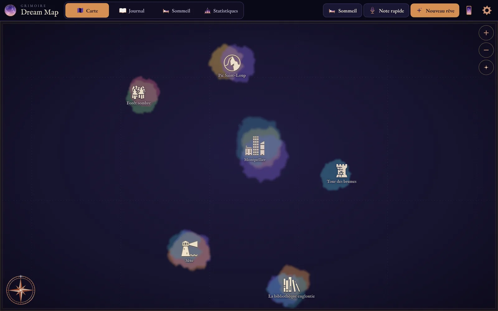
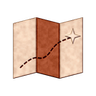
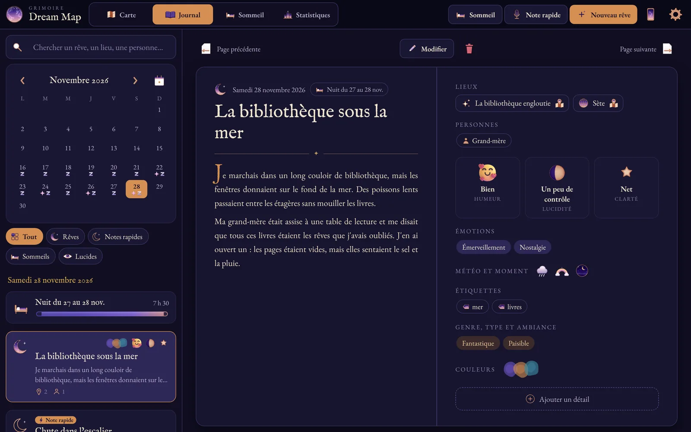
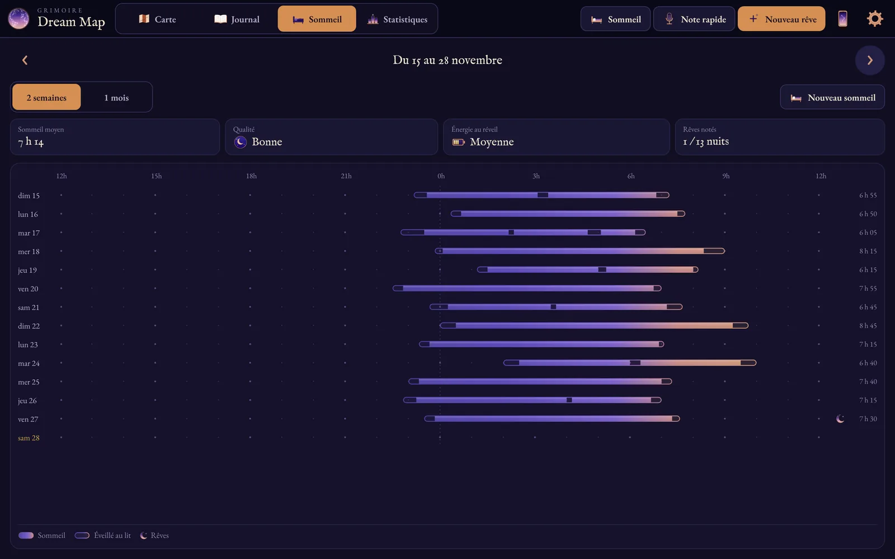
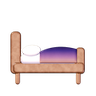
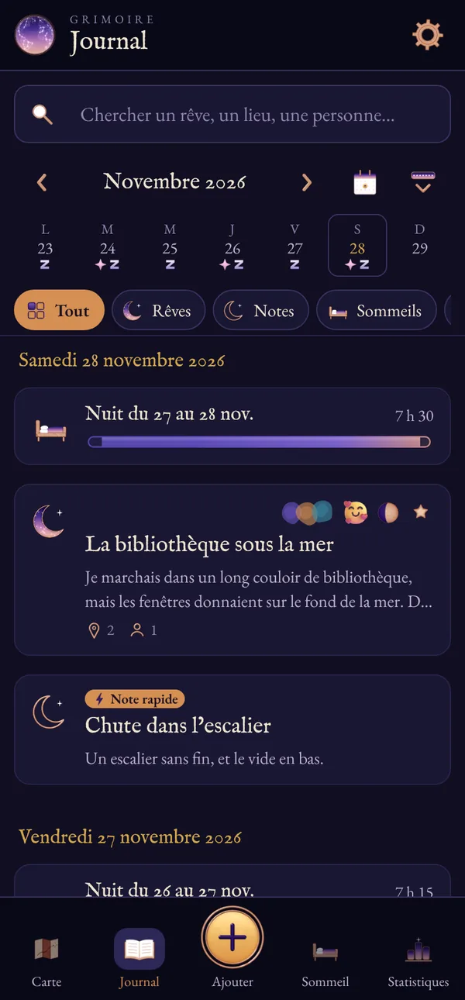
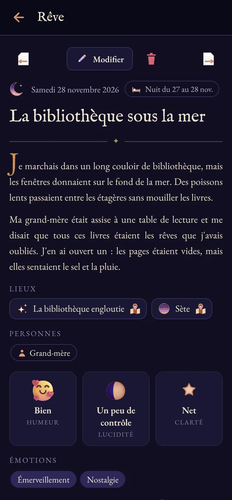
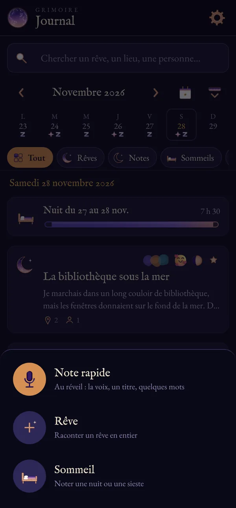
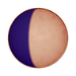
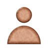

Humeur et émotions
Six niveaux d’humeur en émojis, et tes propres émotions en étiquettes.
Ton journal de rêves, et la carte de tes nuits qui se dessine rêve après rêve.


Pas de fond de carte : un parchemin nuit, vierge, qui se remplit au fil de tes rêves.

Chaque rêve devient une page : le récit avec sa lettrine, puis les lieux, les personnes, l’humeur, la lucidité, la météo, les couleurs…


Un tracker façon bullet journal : chaque nuit est un ruban qui passe de la nuit à l’aube, vide quand tu es éveillé·e.
Le bouton « + » propose une note rapide (ta voix, un titre, quelques mots), un rêve complet ou ta nuit. Tu complètes plus tard, quand tu as le temps.



Six niveaux d’humeur en émojis, et tes propres émotions en étiquettes.

De « pas lucide » à « contrôle total », en phases de lune ; du rêve flou au rêve net.
La météo et le moment du rêve, son genre, son type (cauchemar, faux réveil…), son ambiance, ses couleurs.

Réels ou imaginaires, réutilisables d’un rêve à l’autre : tu vois où et avec qui tu rêves.
Ta voix au réveil, des images, de la musique, des liens et vidéos YouTube.
Une nuit coupée en deux, une sieste l’après-midi : tout se range au bon jour.
Les mêmes rêves sur tes appareils, grâce à un dossier caché de ton propre Google Drive. Facultatif.
Sur PC, l’app se met à jour en 2 secondes, sans réinstaller. Sur téléphone, un bouton dans l’app.
Tes humeurs, tes couleurs, tes lieux et tes nuits en graphiques, à croiser comme tu veux.
Pas de compte à créer, pas de publicité, pas de serveur : tout est enregistré sur ton appareil et l’app marche sans internet. Si tu actives la synchronisation, la copie va dans ton Google Drive, dans un dossier que Dream Map est seul à voir. Politique de confidentialité
Version de test __VERSION__ · gratuite
Télécharge l’installateur, puis ouvre-le. Ensuite, l’app se met à jour toute seule.
Télécharger pour WindowsOuvre cette page sur ton téléphone, télécharge le fichier, puis ouvre-le. Les mises à jour suivantes se font depuis l’app.
Télécharger pour Android